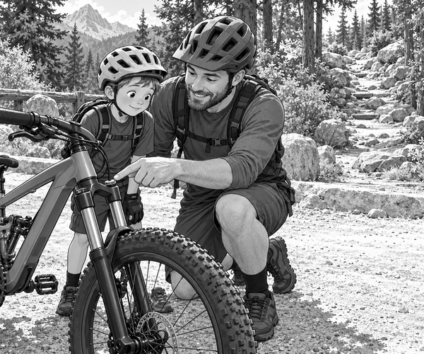

Tom rolled his mountain bike from the van.
Dad checked the tyres.
He tested both brakes.
Tom clicked his helmet strap.
Scout waited with Mum behind the trail-centre fence.
His black tail thumped the wood.
Today, Tom and Dad would ride Badger Wood.
The first path was a smooth gravel climb.
Tom pressed a little lever on top of his front fork.
The lever locked the suspension.
Now the fork did not bob as Tom pedalled uphill.
His bike felt firm on the smooth track.
Fork fact: A suspension fork can move up and down over bumps. Some forks have a lockout that keeps them firm on smooth ground.
At the top, the gravel path ended.
A woodland trail curled between the trees.
Round rocks covered one short part.
The sign called it the Rock Garden.
Tom rolled towards the first small stone.
Tap!
The front of his bike felt hard.
He rolled over another stone.
Clunk!
The handlebars jolted his hands.
Tom stopped before the bigger rocks.
He moved into a wide gravel bay beside the trail.
“My bike has forgotten how to be bouncy,” he said.
Dad smiled.
“Let us solve the riddle.”
Dad held the front brake.
He pressed down on the handlebars.
The fork hardly moved.
Tom looked at the little lever.
It was still in the locked position.
“I forgot to open it after the climb!” he said.
Tom turned the lever.
Dad pressed the handlebars again.
This time, the silver fork slid down.
Then it rose smoothly.
“Riddle solved,” said Tom.
Trail fact: An open suspension fork helps the front wheel follow rough ground. The rider still needs to slow down, look ahead and choose a safe line.
Tom checked that the trail was clear.
He started again at walking speed.
His pedals stayed level.
His elbows and knees stayed soft.
The front wheel met the first rock.
Squish.
The fork moved down.
Then it pushed the wheel back towards the ground.
Bump. Squish. Bump.
Tom looked towards the clear path ahead.
He did not race.
The final rock rolled beneath his tyre.
Soon the trail became smooth again.
Tom and Dad reached the lower lookout.
Mum waved from behind the fence.
Scout bounced on his paws.
Tom parked his bike and opened his arms.
Scout hurried over for a cuddle.
“What was wrong with the bike?” Mum asked.
Tom tapped the little lever.
“Nothing was broken,” he said.
“The fork was just locked at the wrong time.”
1. What part of Tom's bike was locked?
2. Why did Tom open it before the rocks?
3. What did Tom do before changing the lever?